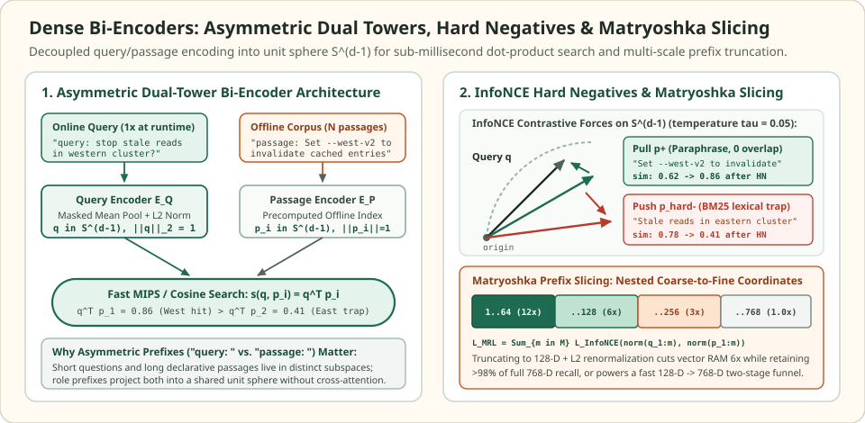

Dense bi-encoders: map queries and passages into a shared metric space
A cross-encoder concatenates a query $q$ and a passage $p$ into $[\text{CLS}]\;q\;[\text{SEP}]\;p$ and runs full $O\bigl((|q| + |p|)^2\bigr)$ self-attention across every query-passage token pair, making first-stage retrieval over $N = 10^7$ passages computationally intractable. A dense bi-encoder (dual encoder) factors relevance into two independent Transformer towers $E_Q$ and $E_P$ that map queries and passages onto the unit hypersphere $\mathbb{S}^{d-1} = \{\mathbf{v} \in \mathbb{R}^d : \|\mathbf{v}\|_2 = 1\}$.
Because passage embeddings $\mathbf{p}_i = E_P(p_i)$ do not depend on the incoming query, all $N$ passages are encoded once offline. At query time, the retriever runs a single forward pass $\mathbf{q} = E_Q(q)$ and reduces candidate ranking to a fast Maximum Inner Product Search (MIPS), $\operatorname{sim}(\mathbf{q}, \mathbf{p}_i) = \mathbf{q}^\top \mathbf{p}_i$.
When a zero-overlap paraphrase must beat a lexical lookalike
0 shared words in P1 · 2 shared words in P2 · temperature τ = 0.05
Consider the operational query $q = \text{“How do we stop stale reads in the western cluster?”}$ evaluated against three passages: P1 (“Set --west-v2 to invalidate cached entries immediately”, the true answer with $0$ shared content words), P2 (“Stale reads in the eastern cluster require manual flush”, a hard negative sharing stale reads and cluster but targeting the wrong region), and P3 (“PostgreSQL vacuum schedule runs every Sunday at 02:00 UTC”, a random in-batch negative).


P2) forces InfoNCE gradients to separate region-mismatched lookalikes ($\mathbf{q}^\top \mathbf{p}_2 = 0.41$) from true paraphrases ($\mathbf{q}^\top \mathbf{p}_1 = 0.86$), while Matryoshka loss concentrates coarse semantics into the leading $64$–$128$ coordinates.A bi-encoder trained only on random in-batch negatives (P3) learns coarse topic matching: because P2 shares exact caching vocabulary with $q$, it scores $\mathbf{q}^\top \mathbf{p}_2 = 0.78 > \mathbf{q}^\top \mathbf{p}_1 = 0.62$ and ranks the wrong region first. Including BM25-mined hard negatives (P2) inside the InfoNCE denominator concentrates over $95\%$ of the contrastive gradient onto the P1 vs. P2 boundary, flipping the inner products to $\mathbf{q}^\top \mathbf{p}_1 = 0.86 > \mathbf{q}^\top \mathbf{p}_2 = 0.41$.
Comparison of lexical overlap, in-batch-only bi-encoder cosine similarity, and hard-negative InfoNCE bi-encoder similarity on the western cluster query.
| Candidate passage | Passage text | Shared content words | In-batch only (q^T p) | With hard negatives (q^T p) |
|---|---|---|---|---|
| P1 (Positive answer) | Set --west-v2 to invalidate cached entries immediately | 0 (paraphrase) | 0.62 (Rank 2 — missed) | 0.86 (Rank 1 — recovered) |
| P2 (BM25 hard negative) | Stale reads in the eastern cluster require manual flush | 3 (stale, reads, cluster) | 0.78 (Rank 1 — wrong region) | 0.41 (Rank 2 — repelled) |
| P3 (Random in-batch neg) | PostgreSQL vacuum schedule runs every Sunday at 02:00 UTC | 0 (unrelated topic) | -0.05 (Rank 3) | -0.08 (Rank 3) |
Scroll horizontally to compare the columns. Keyboard: focus the table, then use the left and right arrow keys.
InfoNCE contrastive geometry and why hard negatives drive the gradient
Given a training mini-batch of $B$ queries $\{q_i\}_{i=1}^B$, each paired with a relevant passage $p_i^+$ and a pool of negatives $\{p_{i,j}^-\}_{j=1}^M$ (combining $B - 1$ in-batch passages from other queries with mined hard negatives), both towers output $\ell_2$-normalized embeddings $\mathbf{q}_i, \mathbf{p} \in \mathbb{S}^{d-1}$. The bi-encoder minimizes the temperature-scaled InfoNCE (Noise-Contrastive Estimation) loss:
where $\tau > 0$ (typically $\tau \in [0.02, 0.05]$ for cosine similarity) controls the sharpness of the softmax distribution over candidates. Let $P_{i,j}^-$ denote the softmax probability assigned to negative $\mathbf{p}_{i,j}^-$ and $P_i^+$ the probability assigned to the positive $\mathbf{p}_i^+$. Differentiating $\mathcal{L}_{\text{InfoNCE}}$ with respect to the query representation $\mathbf{q}_i$ reveals why random negatives quickly stop contributing to learning:
At $\tau = 0.05$, the hard negative P2 ($\mathbf{q}^\top \mathbf{p}_2 = 0.78$) and random negative P3 ($\mathbf{q}^\top \mathbf{p}_3 = -0.05$) differ in similarity by $0.83$, yielding a gradient weight ratio of $\exp(0.83 / 0.05) = \exp(16.6) \approx 1.62 \times 10^7$. Without hard negatives like P2, $1 - P_i^+$ collapses toward $0$ after a few epochs and the encoder never learns fine-grained entity or regional distinctions.
However, naive top-$K$ mining from BM25 or an earlier dense checkpoint (as in ANCE) frequently pulls in false negatives—unlabeled passages in the corpus that actually answer $q_i$. Pushing a true paraphrase away with InfoNCE corrupts the metric space. Modern training pipelines (RocketQA, E5, BGE) filter or distill mined candidates using a high-precision cross-encoder teacher $s_{\text{CE}}(q_i, p)$, discarding any mined negative whose teacher score exceeds a relevance margin or replacing the hard 0/1 label with KL-divergence distillation against the teacher's distribution.
Asymmetric prefixes and sequence pooling modes
Semantic Textual Similarity (STS) is symmetric: $s(A, B)$ checks whether two sentences of comparable length express the same proposition. Information retrieval is fundamentally asymmetric: a short, interrogative query ($5$–$15$ tokens) must match a long, declarative passage ($150$–$512$ tokens) that contains the answer embedded among surrounding context. Even when $E_Q$ and $E_P$ share a single set of Transformer weights ($E_Q = E_P$), prepending distinct role prefixes routes queries and passages into complementary regions of attention space:
- E5 / multilingual-E5 family: prepends
"query: "to every query and"passage: "to every indexed chunk. - BGE / Instructor / Qwen3-Embedding: prepends a task instruction such as
"Represent this sentence for searching relevant passages: "to the query while encoding passages without an instruction prefix (or with a document prefix).
Omitting a model's required "query: " or "passage: " prefix at inference time shifts the resulting vectors out of the trained contrastive subspace, routinely dropping Recall@10 by $8$–$20$ points without raising any runtime error. Once the Transformer produces contextualized token states $(\mathbf{h}_1, \dots, \mathbf{h}_L)$, the sequence is collapsed into a single vector $\mathbf{u} \in \mathbb{R}^d$ before $\ell_2$ normalization $\mathbf{v} = \mathbf{u} / \|\mathbf{u}\|_2$:
| Pooling mode | Formula for unnormalized $\mathbf{u}$ | Architectural fit & trade-offs |
|---|---|---|
| Masked Mean Pooling | $\frac{\sum_{t=1}^{L} m_t \mathbf{h}_t}{\sum_{t=1}^{L} m_t}$ ($m_t \in \{0,1\}$ non-PAD mask) | Default in E5, SBERT, and Contriever. Aggregates signal evenly across all non-padding tokens, making it more stable across variable passage lengths than [CLS], though long multi-topic chunks dilute the mean. |
[CLS] Token Pooling | $\mathbf{h}_1$ (first token state) | Used in DPR, BGE, and Snowflake Arctic Embed. Avoids averaging over background sentences if contrastive training explicitly routes global summary information into index $1$. |
Last-Token (EOS) Pooling | $\mathbf{h}_{L}$ (final non-PAD / EOS state) | Required for causal decoder-only LLM embedders (e.g., E5-Mistral, NV-Embed, Qwen3-Embedding). Under a causal mask, only the final EOS token attends to the entire preceding sequence $t_1\dots t_L$. |
Matryoshka Representation Learning (MRL) and prefix truncation
A standard $d = 768$ or $d = 1{,}536$ embedding distributes information uniformly across all coordinates: slicing the first $128$ coordinates destroys the geometry because coordinate $1$ is no more informative than coordinate $768$. Matryoshka Representation Learning (Kusupati et al., 2022) forces the leading coordinates to form valid, coarse-to-fine subspaces by evaluating the InfoNCE loss simultaneously across a nested set of prefix dimensions $\mathcal{M} = \{64, 128, 256, 512, 768\}$ during training:
where $\mathbf{v}_{1:m} = (v_1, \dots, v_m)^\top \in \mathbb{R}^m$ slices the first $m$ coordinates and $c_m > 0$ weights each nesting scale. Because slicing drops the tail energy $\sum_{k=m+1}^d v_k^2$, a truncated prefix no longer has unit norm ($\|\mathbf{v}_{1:m}\|_2 < 1$) and must be $\ell_2$-renormalized after slicing so inner products remain equivalent to cosine similarity.
A single Matryoshka checkpoint supports two high-leverage deployment patterns: (1) RAM-constrained indexing, where indexing renormalized $128$-D slices cuts HNSW vector memory and SIMD dot-product bandwidth by $768 / 128 = 6\times$ while typically retaining $98\%+$ of full-dimensional Recall@100; and (2) adaptive funnel retrieval, where an index scans $128$-D prefixes to shortlist the top $500$ candidates in RAM and then rescores only those $500$ candidates using full $768$-D vectors fetched from disk.
import math
def l2_normalize(vec):
norm = math.sqrt(sum(x * x for x in vec))
return [x / norm for x in vec]
def dot(a, b):
return sum(x * y for x, y in zip(a, b))
# 1. Verify the InfoNCE gradient concentration on hard negative P2 vs random negative P3
tau = 0.05
sim_pos = 0.62 # P1: paraphrase ("Set --west-v2 to invalidate cached entries immediately")
sim_hard = 0.78 # P2: BM25 lexical trap ("Stale reads in the eastern cluster...")
sim_rand = -0.05 # P3: random negative ("PostgreSQL vacuum schedule...")
logits = [sim_pos / tau, sim_hard / tau, sim_rand / tau]
max_l = max(logits)
exps = [math.exp(l - max_l) for l in logits]
Z = sum(exps)
probs = [e / Z for e in exps] # [P_pos, P_hard, P_rand]
# Hard negative P2 captures >95% of the softmax probability mass!
assert probs[1] > 0.95
assert (probs[1] / probs[2]) > 1.6e7
# 2. Verify Matryoshka prefix slicing and mandatory L2 renormalization
# 8-D toy Matryoshka vectors where coarse regional + action signal sits in indices 0..3
q_full = l2_normalize([0.82, 0.45, -0.30, 0.15, 0.06, -0.05, 0.04, 0.03])
p1_full = l2_normalize([0.79, 0.48, -0.28, 0.18, 0.05, -0.04, 0.06, 0.02]) # West positive
p2_full = l2_normalize([0.80, -0.46, 0.25, -0.16, 0.07, -0.04, 0.05, 0.03]) # East hard neg
def mrl_slice(vec, m):
prefix = vec[:m]
# Before renormalization, prefix norm is strictly < 1.0
assert sum(x * x for x in prefix) < 1.0
return l2_normalize(prefix)
for m in (2, 4, 8):
qm = l2_normalize(q_full[:m])
p1m = l2_normalize(p1_full[:m])
p2m = l2_normalize(p2_full[:m])
assert math.isclose(sum(x * x for x in qm), 1.0, rel_tol=1e-9)
assert dot(qm, p1m) > dot(qm, p2m), f"Prefix m={m} must preserve P1 > P2 ranking"
print(f"InfoNCE softmax probs -> P1(pos): {probs[0]:.4f}, P2(hard): {probs[1]:.4f}, P3(rand): {probs[2]:.2e}")
print(f"Full 8-D sim(q, P1)={dot(q_full, p1_full):.3f} vs 4-D MRL slice sim={dot(mrl_slice(q_full, 4), mrl_slice(p1_full, 4)):.3f}")Check the operating assumptions
Why can mining the top-5 BM25 results as hard negatives for every query hurt bi-encoder accuracy instead of improving it?
In standard retrieval benchmarks (such as MS MARCO), only 1 or 2 passages per query are human-labeled as positive, while dozens of other passages in the corpus also contain the correct answer. Many top-5 BM25 hits are actually unlabeled positives (false negatives). Treating them as negatives in the InfoNCE denominator pushes valid answers away from the query unless a cross-encoder teacher filters out candidates with high relevance scores.
Why must you re-apply L2 normalization after slicing a 768-D Matryoshka vector down to its first 128 coordinates?
Although the full 768-D vector has unit L2 norm, its first 128 coordinates only carry a fraction of the total squared magnitude—and that fraction varies from document to document. Without dividing each 128-D slice by its own L2 norm, inner products q_{1:128}^T p_{1:128} are biased toward passages that happen to concentrate more raw norm in the first 128 coordinates rather than passages with the smallest angle to the query.
Why do decoder-only LLM embedding models pool the final EOS token instead of taking the mean over all token states?
Causal decoder-only models apply a lower-triangular attention mask where token i can only attend to tokens 1..i. Early tokens in the passage have zero visibility into the rest of the sentence, so averaging them blends incomplete prefix representations into the final vector. Only the terminal EOS token at index L has attended across the entire sequence.
Sources
- Karpukhin et al.: Dense Passage Retrieval for Open-Domain Question Answering, EMNLP 2020 (dual-encoder architecture, in-batch negatives, and BM25 hard-negative training).
- Xiong et al.: Approximate Nearest Neighbor Negative Contrastive Learning for Dense Text Retrieval (ANCE), ICLR 2021 (gradient dominance of hard negatives in InfoNCE).
- Wang et al.: Text Embeddings by Weakly-Supervised Contrastive Pre-training (E5), arXiv 2022 (asymmetric
query:andpassage:prefix conditioning). - Kusupati et al.: Matryoshka Representation Learning, NeurIPS 2022 (multi-scale nested prefix loss for adaptive-dimension embeddings).